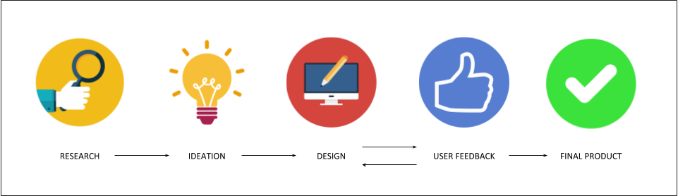

Design enthusiast, because as far as the cutomer is concerned, the interface is the product.
Contact Me
GestureAR
The future of UI in AR and VR applications will be dominated by hand gestures. In this project, I explored an intuitive hand-gesture based interaction for smartphones having a limited computational capability. To this end, an efficient algorithm is presented for gesture recognition with First Person View (FPV) that focuses on recognizing a set of gestures for smartphones through single monocular camera vision. This can be used with frugal AR/VR devices such as Google Cardboard and Wearality in building AR/VR based automation systems, for large scale deployments by providing a touch-less interface with real-time performance. We take into account multiple cues, including palm color, hand contour segmentation, and motion tracking which effectively deals with FPV constraints caused due to a wearable device.
The Idea :
We propose a technique for hand gesture classification by categorising the hand motion in various gestures which can be used for triggering different types of events which are intuitive for wearable AR/VR gadgets. We circumvent the shortcomings of the probabilistic models for hand detection by using a simpler palm detection model that works purely on Cb and Cr values using a statistical model. The step generates multiple blobs on the palm segment. Contour detection filters the blobs that are small and hence would not correspond to palm. A Shi-Tomasi detector based simple approach is applied for feature point detection on the contour boundary. The motion of these feature points is analysed by computing the optical flow based displacement. The aggregate measure of the displacement is used for labelling swipes under major groups. The approach is computationally simple and can be run on an ordinary smart-phone. We demonstrate the performance of this approach on more than hundred of sample video segments with over 95% classification accuracy. This technique can be easily integrated with many applications for the overlaid information traversal spanning multiple pages. The same algorithm is then extended in a telepresence scenario where a point and mark gesture can be used for region of interest selection in telepresence inspection. More details can be found in the project space. Two papers on this works have been presented at IEEE WACV, 2017 and IEEE CVPR, 2017
Multi-modal Affect Detection
The system is proposed as an assistant tool for distance learning, involving a two node BCI headset and a Kinect sensor. Affect detection is a key factor needed for automated HCI applications. Affective computing helps understand the user’s state of mind or emotions and hence helps to provide a better service. The system is an assistant tool to identify attention levels of user for distant learning courses as well as for any e-learning applications. Experiments were conducted with volunteers to understand user affective state with different course materials.
The tool uses EEG values and face tracking using a NeuroSky Mindwave headset and a Microsoft Kinect respectively. The data obtained from the sensors is processed to remove noise and is marked and trained using the k-Nearest Neighbors algorithm to create a classifier for user attention levels. Four features: attention, meditation, video id and timestamp of the video, were selected to classify the BCI values. The classifier is then incorporated into a plug-n-play browser plugin, where it pauses the video when the attention levels fall below a threshold, to suggest alternate resources for the topic covered in that section. Also, academicians involved with MOOCs can obtain real-time feedback in the form of brainwaves and realize the strengths and weaknesses of a particular video. A paper based on this has been presented in IEEE TENCON 2016, Singapore.
Loan Estimator Redesign
Loan Estimator is the entry point to the High Net Worth Lending business of Morgan Stanley. It is a loan calculator for securities based lending and is actively used by the entire fleet of Morgan Stanley FAs. My role was to lead the UI re-design of the application.

The process was taken up over 7 design cycles, and was finally productionized in June of 2019. In the research phase, I conducted competitive analysis with respect to the legacy application, and finalized the visual layout based on user flow and behaviour. The ideation phase was used to finalize the user journey. It was build over weekly deployment and feedback cycles with the stakeholders. The delivery led to me winning the SPOT award for outstanding delivery and putting clients first.
Interactive Virtual Classroom
This project was explored as a proof of concept in which I tried to explore mixed reality as an educational tool, where students will be able to interact with virtual environments with interactive elements. Interaction in video increases the scope of the project and can enable many use AR use cases, which will make the content more interesting for users.
The application comprised of two segments. As soon as a 360 video (with markers embedded) is uploaded on the server, it is parsed through an processor to create metadata for the video. This is done by placing the camera at the center of a spherical mesh and manipulating it programmatically. The metadata is then used to highlight information in the 360 video, and the user can manipulate the information using a tap based interaction framework of the GearVR headset.
Automated Document Verification
As part of my work at Morgan Stanley, I designed an automated document parser, that would detect and verify signatures and automate flows based on selected checkboxes using OCR and Computer Vision.
Word Recommendation System
I designed a word recommendation system using the test data from 340000 webdocs, using the Apriori algorithm on transactional data in partial fulfilment of the Data Mining course. The system ran on a 4-node cluster using Hadoop.